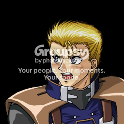

หน้า 166 จากทั้งหมด 176

โพสต์แล้ว:
พุธ 17 ก.ย. 2008 7:23 pmโดย ECO
สงสัยเจ้เทียรคงจะบอกว่า จันทร์อังคารหน้า สินะ - -"
แวะมาเจาะเกลือไปขาย
โพสต์แล้ว:
พุธ 17 ก.ย. 2008 7:23 pmโดย ECO
จะลงวันนี้ ไม่ก็พรุ่งนี้เช้าเน้อ ! รอหน่อย โทษทีที่ช้า งานเข้ากะทันหัน ต้องไปแต่งงาน !? ( ฮา )
โพสต์แล้ว:
พุธ 17 ก.ย. 2008 7:39 pmโดย ECO
พะ...พรุ่งนี้ T^T
โพสต์แล้ว:
พุธ 17 ก.ย. 2008 7:56 pmโดย ECO
ตำนานบทที่ XVI
“Sentencia de la L u n a [ Judgement of the Moon ]”
“เอาล่ะครับ ! ท่านผู้ชมทุกท่าน ต่อไปก็ขอเตรียมพบกับการประลองคู่ต่อไปได้เลย !” เสียงของโฆษกประกาศก้องเวทีการประลอง แต่ทว่าตอนนั้นเองที่หนึ่งในคณะกรรมการของการประกวดวิ่งเข้ามากระซิบกระซาบอะไรบางอย่างกับโฆษกผู้นั้น เขาพยักหน้าสองสามทีราวกับเข้าใจอะไรบางอย่าง
“อ่า ... ต้องขออภัยด้วยนะครับ !” เขาประกาศก้องอีกครั้ง “การประลองคู่ต่อไปเป็นของ ‘ทรีทนิเทียร์ ลูเซ็นบุน’ และ ‘อิเซะ’ แต่ทว่า ! ทางด้านของผู้เข้าร่วมการประลอง ‘ทรีทนิเทียร์’ เพิ่งเข้ามาขอสละสิทธิ์กับกรรมการด้วยเหตุผลบางอย่าง !” ตอนนี้เองที่เสียงโห่ร้องอย่างไม่พอใจของผู้ชมเริ่มดังขึ้น จนโฆษกต้องรีบเอ่ยต่อเพื่อแก้ไขสถานการณ์
“เพราะฉะนั้น ! ผู้เข้าร่วมการประลอง ‘อิเซะ’ นั้น ! ได้ผ่านเข้ารอบต่อไปอย่างสบาย ๆ เลยครับ !”
“ด้วยเหตุดังนั้น ! เราจะเริ่มที่การประลองของคู่ต่อไปเลย ! นั่นคือ ! ‘อิซิล ลิเนเวียร์’ และ ‘เพเลเนีย เนนนู’ !”
สิ้นเสียงการประกาศของโฆษก เฟย์และเนนนูก็ลุกขึ้นแทบจะพร้อมกัน ดวงตาของทั้งสองประสานกันโดยมิได้ตั้งใจ และนั่น ดูราวกับว่าเป็นการประกาศศึกก็มิปาน สองสาวหันหลังไปคนละทิศ พร้อมกับเดินออกจากที่นั่งของผู้เข้าแข่งขัน เพื่อเข้าไปเตรียมตัวที่ห้องพักสำหรับเตรียมตัวของผู้เข้าแข่งขัน เนนนูเดินเข้าไปในห้องพักของตน และพบว่า มีสองบุรุษนั่งรออยู่แล้ว ไม่ใช่ใคร หากแต่เป็นแซคและเบลทรานนั่นเอง แต่เมื่อสิ้นเสียงปิดประตูของเธอ ก็ปรากฏอีกร่างระหว่างสองชายหนุ่ม หากแต่ว่าก็มิอาจจะเห็นใบหน้าได้ เพราะว่าถูกปกปิดด้วยผ้าคลุมสีดำสนิท เห็นเพียงแต่ริมฝีปากขาวซีดเท่านั้นเอง “... เอาให้เสียหายมากที่สุด ...” ร่างนั้นเอ่ยด้วยน้ำเสียงแหบพร่า
“จากนั้น ... ยอมแพ้ และออกมาซะ ... เข้าใจแล้วใช่ไหม ? เนนนู ...” หญิงสาวผู้ยิ้มเสมอพยักหน้าก่อนจะโค้งลงอย่างนอบน้อม เช่นเดียวกับสองบุรุษที่ยืนอยู่ด้านข้างของร่างนั้น “... ดีแล้ว และ ‘ท่านผู้นั้น’ จะปิติในตัวพวกเจ้าเหลือคณา”
อีกทางด้านนึง ขณะที่เฟย์นั้นกำลังเตรียมตัวที่จะขึ้นประลองอยู่ โนที่อยู่ด้วยก็เอ่ยขึ้นมา “ระวังตัวนะ” เธอว่าพลางยืนกอดอกมองเพื่อนสาวด้วยสายตาเป็นห่วงเป็นใย “... ถ้าเธอต้องประลองกับคนอื่นที่ไม่ใช่หนึ่งในสามคนนั่น ฉันจะสบายใจกว่านี้เยอะเลย”
เฟย์เพียงแค่ยิ้มบางออกมา แต่มิได้เอ่ยอันใด เธอเดินเข้าไปหาโนก่อนจะคว้าตัวหญิงสาวเข้ามากอดไว้ในอ้อมแขนแน่น โนนั้นชะงักเล็กน้อย ก่อนที่จะตัดสินใจกอดตอบ พลางใช้มือลูบไล้เรือนผมสีเงินของเพื่อนสาวอย่างอ่อนโยนเท่านั้น ดูราวกับว่าทั้งสองมิต้องใช้คำพูดในการสื่อแทนความรู้สึก แต่เพียงแค่สัมผัส ก็สามารถที่จะสื่อออกมาได้มากพอแล้ว
“ฉันไม่เป็นไรหรอก” เฟย์ว่าพลางยิ้มบาง “... เชื่อฉันสิ อย่าลืมสิว่าฉันเป็นใคร ...” เธอคลายอ้อมกอด พร้อมกับจ้องหน้าโนด้วยรอยยิ้มที่งดงาม และสื่อด้วยความหมายที่ว่า ‘จงเชื่อใจ’ ออกมาอย่างเต็มที่
“ฉันน่ะ ... เป็นคนรักของเธอนะ ...” สิ้นประโยคนั้น ร่างของทั้งสองแนบชิดติดกันราวกับหลอมรวมกันเป็นร่างเดียวกัน ต่างฝ่ายต่างอยู่ในอ้อมแขนของกันและกัน ความอบอุ่นและความรู้สึกต่าง ๆ พรั่งพรูออกมาราวกับน้ำพุที่พุ่งทะยานขึ้นสู่ห้วงนภา ริมฝีปากบางอบอุ่นของทั้งสองประกบสัมผัสกันด้วยความรู้สึกที่ยิ่งรุนแรงขึ้น จนในที่สุด เฟย์ก็ต้องละออกจากตัวโนก่อน ใบหน้าขึ้นสีเลือดฝาด ดูราวกับเสียดายอยู่บ้าง “... รอก่อนนะโน ...”
“แล้ว ... ฉันจะกลับมาแน่นอน ...” เฟย์ว่าพลางยิ้มบาง ชั่วขณะนั้นเธอช่างดูงดงามราวกับเทพธิดาจากสรวงสวรรค์ก็มิปาน ตอนนั้นเองที่เสียงเรียกของโฆษกก็ได้ดังขึ้น ทั้งโนและเฟย์ต่างลุกขึ้นยืน พร้อมกับเดินออกไป ด้วยหัวใจที่มุ่งมั่น ...
เฟย์เดินขึ้นไปบนเวที หลังจากมาถึงแล้ว และที่ตรงนั้น เนนนูยืนยิ้มอยู่ที่อีกฟากของสนามประลอง สีหน้าดูไม่กังวลใจใด ๆ เลยแม้แต่น้อย ที่จริง ... ดูออกจะสบายใจเกินไปซะหน่อยเสียด้วยซ้ำไปสำหรับการประลองเช่นนี้ “... ลาคนรักเรียบร้อยแล้วหรอจ๊ะ ?” เนนนูเอ่ยถามด้วยรอยยิ้มสดใส
“แล้วจะได้รู้กัน” หญิงสาวเอ่ยตอบพร้อมกับแววตาที่มุ่งมั่น หัวใจอันเปี่ยมด้วยความรู้สึก เธอมั่นใจว่าเธอไม่แพ้ใครแน่นอน !! ดวงตางดงามคู่นั้นทอดมองกลับไปที่นั่งของผู้เข้าแข่งขัน สายตาของคนสองคนที่ผูกพันซึ่งกันและกันประสานกันราวกับจะถ่ายทอดความในใจเป็นครั้งสุดท้าย แสงแดดยามบ่ายทอประกายเจิดจ้าจนออกจะร้อนเกินไปเสียด้วยซ้ำ ขณะที่ทั้งสองกำลังรอสัญญาณการประลองจากโฆษกผู้เป็นกรรมการการประลอง
... เข้าใจไหมเนนนู เอาให้เสียหายมากที่สุด และถอนตัวออกมาซะ ...
จากนั้นสักพัก เสียงของผู้ชมก็เงียบสงัดลง เมื่อกำปั้นของโฆษกยกขึ้นเหนือศีรษะแสดงสัญลักษณ์แห่งการเริ่มต้นแห่งการต่อสู้ที่สำคัญครั้งนี้ มือของโฆษกหนุ่มถูกเหวี่ยงลงพร้อมกับเสียงร้องประกาศก้อง “การประลองศึกซิลเวอร์ฮาร์ท ระหว่าง เพเลเนีย เนนนู และ อิซิล ลิเนเวียร์ !! เริ่มได้ !!”
เฮฮฮฮฮฮฮฮฮฮฮ ----- ฮฮฮฮ !!!
เสียงของผู้ชมตะโกนกึกก้องลั่นสนาม เมื่อสัญญาณถูกประกาศ พร้อมกับร่างของผู้ประลองทั้งสองที่เริ่มเดินไปมาราวกับจะดูท่าทีและชั้นเชิงของอีกฝ่ายเสียก่อน เฟย์นั้นเป็นนักวิเคราะห์ชั้นยอด เธอสามารถที่จะวิเคราะห์สถานการณ์ในการสู้รบและสามารถที่จะใช้เวทย์แห่งความมืดในการพลิกแพลงได้อย่างมากมาย แต่ปัญหาคือ อีกฝ่าย ที่ไม่มีข้อมูลอะไรเลยแม้แต่นิดเดียว รู้แต่เพียงว่า เธอเป็นหนึ่งในสามคนที่น่าสงสัยที่สุดในการประลองครั้งนี้เท่านั้น ดวงตาที่คมกริบราวกับพญาวิหคของเฟย์จับจ้องฝ่ายตรงข้ามตาไม่กระพริบ ขณะที่อีกฝ่ายนั้นกลับยิ้มตอบด้วยรอยยิ้มสดใสเท่านั้น
“( ... ลองดูสักหน่อยน่า ) ...”
วูบ !! ร่างของเฟย์พุ่งเข้าใส่เนนนูด้วยความรวดเร็ว ปีกสีดำสัญลักษณ์แห่งมารสยายออกราวกับจะเร่งความเร็วขึ้นไปอีก มือทั้งสองข้างของเธอนั้นง้างไปด้านหลังพร้อมกับแสงสีดำทมิฬที่ปรากฏ “... พันธะ โลหิต บทบรรเลงแห่งความมืดเอ๋ย ขอจงแปรเปลี่ยนเป็นพลัง มลายศัตรูข้าสิ้น !”
ก่อนจะเข้าถึงร่างของเนนนูเพียงชั่วครู่ ร่างของเธอก็ทะยานขึ้นเหนือท้องฟ้า พร้อมกับวงแหวนเวทย์สีม่วงขนาดใหญ่บนพื้นดินเหนือร่างของเนนนูที่ยืนอยู่ตรงนั้น “อะ ... อะไรกัน !!?” เนนนูร้องขึ้นมาอย่างตกใจ และทำท่าที่จะกระโดดออกมาจากวงแหวนเวทย์นั้น หากแต่รอยยิ้มบางอย่างปรากฏขึ้นบนใบหน้าของเฟย์ เพราะเธอรู้ว่า หนีไม่ทันแน่นอน
S h a d o w B l a s t ! !
พลังแห่งความมืดพุ่งทะยานขึ้นจากวงแหวนเวทย์ก่อเกิดพลังทำลายอันเหลือล้นระเบิดสนามบริเวณนั้นจนเศษหินและเศษฝุ่นกระจายไปทั่ว เฟย์ลงมาบนพื้นและยืนมองสถานการณ์อยู่เช่นนั้น ผู้ชมหลายคนโห่ร้องให้กับการโจมตีครั้งนั้น หากแต่หญิงสาวผู้บรรเลงมหาเวทย์กลับไม่ได้คิดเช่นนั้น จากการที่ผ่านการต่อสู้มานานมากมาย ไม่เคยมีครั้งไหนที่มันจะจบง่ายเช่นครั้งนี้ และเธอก็พอจะคาดเดาได้ว่า อีกฝ่ายก็ย่อมที่จะมีลูกเล่นแอบซ่อนอยู่เช่นกัน เมื่อควันและฝุ่นได้จางหายไปจนสิ้น เธอก็ต้องตกใจยิ่งกว่าเดิม เมื่อพบกับเศษร่างของเนนนู ทั้งแขนขา รวมทั้งอวัยวะภายใน เละกระจายเต็มพื้นสนามดูน่าสยดสยองยิ่งนัก หรือว่ามันจะจบเช่นนี้แล้วจริง ๆ ? เฟย์ย่างกรายเข้าไปดูซากศพเหล่านั้นพร้อมกับใช้มือสัมผัสอวัยวะภายใน ...
“... เป็นไปได้หรือ ? ... ของจริง ?” เธอเอ่ยอย่างไม่ค่อยเชื่อความรู้สึกของตัวเอง พร้อมกับมองคราบโลหิตที่ติดอยู่เต็มมือของเธอ เธอเคยต่อสู้กับนักเชิดหุ่นมาแล้ว และเมื่อการโจมตีจบลง ก็จะพบแต่เพียงซากของหุ่นเท่านั้น แต่นี่มัน ของจริง ของจริงทั้งหมด ...
“... รุนแรงจังเลยนะ ...”
เสียงหนึ่งเอ่ยขึ้นที่บริเวณขอบสนาม และเสียงนั้นเฟย์ย่อมจะจำได้อย่างแน่นอน ... ฉับพลันแววตาตกตะลึงก็ปรากฏขึ้นบนใบหน้าของหญิงสาว รวมทั้งผู้ชมทั้งสนามก็ด้วยเช่นกัน เมื่อสิ่งที่พวกเขาเห็นแทบจะทำให้ไม่อาจจะเชื่อสายตาของตนเองได้เลย ! ศีรษะของเนนนูที่กระเด็นออกจากร่างหลังจากวงเวทย์กำลังมองมาที่เฟย์ด้วยแววตาที่ปกติเหมือนกับไม่มีอะไรเกิดขึ้น เป็นภาพที่ทั้งสยดสยองและน่าประหลาดยิ่งนัก แม้กระทั่งโฆษกกระประลองยังถึงกับอึ้งนิ่งเงียบไปทีเดียว
“พลังเวทย์ของเธอรุนแรงใช้ได้เลยนะ” เนนนูเอ่ยพร้อมกับรอยยิ้ม “... จะว่าไป นานแล้วนะ ที่ฉันไม่ได้หัวขาดกระเด็นแบบนี้ อืม ... ครั้งสุดท้ายมันเมื่อไรกันนะ ?” หญิงสาวผู้เหลือแต่ศีรษะขมวดคิ้วด้วยท่าทีครุ่นคิด
ควบคุมไว้ ... ควบคุมสติไว้ ... เป็นไปได้หรอ ? มันเป็นไปได้งั้นหรอ ? ...
วูบ ... เปรี้ยง !! ... แสงสีม่วงแห่งการทำลายล้างสว่างเจิดจ้าขึ้นอีกครั้ง พร้อมกับเวทย์แห่งความมืดที่ระเบิดศีรษะของเนนนูจนกระจุย ! เศษซากสมองรวมทั้งโลหิตกระจายเต็มพื้นสนามอีกครั้ง สร้างความน่าสยดสยองยิ่งกว่าเดิม ถึงตอนนี้ ผู้ชมหลายคนเริ่มทนไม่ได้ และรีบหนีไปอาเจียนในห้องน้ำกันแล้ว
“ขอยืนยันคำเดิม เธอนี่มันรุนแรงดีจังเลยนะ” เสียงนั้นยังคงดังขึ้น แม้ว่าในสนามจะไม่มีใครนอกจากเฟย์อยู่แล้วก็ตามที ฉับพลันที่จู่ ๆ มือที่เหมือนศพก็พรวดขึ้นมาจากพื้นเวที พร้อมกับจับขาของเธอเอาไว้ พร้อมกับบางสิ่งที่เหมือนกับกำลังจะผุดขึ้นมาจากพื้นสนาม และต้องยิ่งตกตะลึงมากขึ้นไปอีก เมื่อปรากฏศีรษะที่คล้ายกับศพของหญิงสาว ร่างอันไร้ชีวิตพิลึกพิลั่นนั้นเอ่ยด้วยน้ำเสียงยานครางราวกับใกล้จะสิ้นชีวา “... ฉาน ... จา ... อาว ... เธอ ... ปาย ... ด้วย ...”
เฟย์พยายามควบคุมสติของตนเองเอาไว้ พร้อมกับยกมือขวาขึ้นร่ายเวทย์แห่งความมืดอันปรากฏคมมีดเวทย์มนต์ พร้อมกับตัดมือที่จับขาของเธอเอาไว้จนขาดกระเด็น แล้วพยายามถอยห่างออกไปจากเศษซากเหล่านั้น แววตาวิตกกังวลเริ่มฉายขึ้นบนใบหน้าของหญิงสาวผู้งดงามคนนี้ เธอไม่เคยพบมาก่อนเลย ทั้งที่มั่นใจว่าอีกฝ่ายนั้นเป็นนักเชิดหุ่นอย่างแน่นอน แต่ทำไมกัน ? ทำไมถึงมีการใช้ศพ และเวทย์มนต์นอกรีตถึงขนาดนี้กันนะ !? ทั้งกลิ่นเหม็นของซากศพรวมทั้งกลิ่นคาวโลหิตนั้น เธอก็มั่นใจว่ามันเป็นของจริงอย่างแน่นอน
“กำลังคิดอยู่ว่ามันเหมือนจริงมากเลยใช่ไหม ?” คราวนี้เสียงของเนนนูมาจากด้านหลังของเธอ และเธอก็ต้องแปลกใจ เมื่อได้พบเนนนูในสภาพที่ครบถ้วนสมบูรณ์ยืนอยู่ตรงหน้าของเธอด้วยใบหน้ายิ้มแย้ม “อย่างว่าแหละนะ” เธอยักไหล่
“ศิลปะของฉันมันธรรมดาซะที่ไหนกันล่ะ ?” ฉับพลันรอยยิ้มอันชั่วร้ายเหลือคณาของหญิงสาวก็ปรากฏขึ้นชั่ววูบ ทำเอาเฟย์นั้นเสียวสันหลังไปชั่วขณะเลยทีเดียว เธอคนนี้ มีทั้งจิตสังหารและความมุ่งร้ายที่ไม่ธรรมดา ผิดกับหน้าตาที่ยิ้มแย้มนั้นยิ่งนัก “เรามาเริ่มกันต่อเถอะ ...”
“ฉันไม่รู้หรอกนะ ว่าเธอเล่นลูกไม้อะไรกัน ...” เฟย์เอ่ยด้วยท่าทางที่ระวังตัวมากขึ้น “... แต่ดูแล้ว เธอคงจะไม่ใช่นักเชิดหุ่นธรรมดาอย่างแน่นอน จริงไหม ?”
“สำหรับศิลปะ คำว่าธรรมดา มันก็เหมือนกับคำว่า ไม่มีค่า นั่นแหละ” เนนนูเอ่ยต่อ “ศิลปะของฉัน มันไม่ใช่แค่ธรรมดา ...” เธอหรี่ตาลงพร้อมกับเสียงที่เหมือนจะแผ่วลง “แต่มันคือ ... ศิลปะชั้นยอดต่างหากล่ะ !! ฮ่า ฮ่า ฮ่า !!!”
สิ้นเสียงหัวเราะของหญิงสาวผู้วิกลจริต ศพที่เหมือนจะถูกสร้างขึ้นมาก็พรวดขึ้นมาจากพื้นดินด้านหลังของเธอนับสิบตัว และพุ่งเข้าใส่เธออย่างมุ่งร้าย “... โลหิต กายเนื้อ เครื่องใน ของจริงสินะ ?” เฟย์เอ่ยขึ้นอย่างเยือกเย็นขณะที่พวกมันนั้นเข้าใกล้ตัวเธอมากขึ้นทุกที โนที่นั่งชมการแสดงอยู่นั้นเผยรอยยิ้มออกมา
“นี่สิ ... องค์หญิงของฉัน ...”
ก่อนที่พวกมันจะเข้าถึงร่างของเฟย์เพียงเล็กน้อย พวกมันก็ต้องหยุด เมื่อร่างของหญิงสาวผู้ใช้มหาเวทย์แห่งความมืดลอยขึ้นเหนือพื้นเวที มิใช่ด้วยปีกอันจุติลงพร้อมกับ หากแต่ด้วยพลังเวทย์แห่งความมืดอันก่อเกิดพันธสัญญาแห่งนรกภูมินั่นเอง มือทั้งสองข้างของเธอสยายออก พร้อมกับแววตาอันเต็มไปด้วยความกล้าแกร่ง ไร้ซึ่งความลังเลและหวาดกลัว แววตานั่น หมายถึงความหายนะของอริศัตรูนั่นเอง !!
“หมื่นพันธะ อันร่ำร้อง ... เหล่าดวงวิญญาณผู้โศกา เหล่าทวยเทพแห่งความหายนะ ขอพลังแก่ข้า เพื่อทำลายศัตรูแห่งท่านจนมลายสิ้น สลายทั้งวิญญาและกายหยาบอันน่ารังเกียจ ...”
สิ้นเสียงร่ายมนต์ตราอันดังกึกก้องนั้น จากตัวเธอเป็นศูนย์กลาง วงแหวนเวทย์นั้นขยายขนาดใหญ่มากขึ้นจนกินบริเวณทั่วพื้นเวที อักขระสีเหลืองทองวิ่งไปตามเส้นวงแหวนเวทย์สีม่วงนั้น ให้ความรู้สึกอันน่าขนลุกและทรงพลังอย่างน่าประหลาด โนที่นั่งอยู่นั้นยิ้มออกมา “... เอาเลย แสดงพลังของพวกมันให้เธอเห็นสิ ... Princesa de las Tinieblas ...”
L u n a l l e n a d e D e s t r u c c i o’ n ! ! [ คืนเพ็ญแห่งความพินาศ ! ]
แว๊บบบบ --- บ !! ...
สิ้นเสียงประกาศก้องมนตราแห่งความวินาศ แสงสีเหลืองทองอร่ามเจิดจ้าพวยพุ่งขึ้นจากวงแหวนเวทย์ พร้อมกับท้องฟ้าที่แปรเปลี่ยนเป็นสีแดงโลหิตราวกับค่ำคืนแห่งความตาย มหาเวทย์อารัมภบทแห่งนรกภูมิ อันมีแต่ผู้ที่ถูกเลือกเท่านั้นจะสามารถทำพันธสัญญากับจอมมารเพื่อการนี้ได้ แม้แต่เนนนูที่อยู่เบื้องล่างของเฟย์ ยังต้องเผลอตัวอ้าปากค้างด้วยความอลังการของมหาเวทย์ แต่ตอนที่เธอเหมือนจะรู้ตัว เหล่าซากศพนั้นพุ่งเข้าใส่ร่างของเธอเอง และผสานรวมตัวกันคล้ายกับจะเป็นเกราะกำบังให้กับเธอ ...
S A N S I O’ N ! !
คำกล่าวตัดสินประหารของหญิงสาวถูกเอื้อนเอ่ยกึกก้องสะท้านเวที แสงสีทองสลับม่วงนั้นพุ่งลงมายังพื้นเวที ก่อนจะระเบิดขึ้นเป็นวงกว้างสุดอาณาเขตของวงแหวนเวทย์ เศษหินและเศษดินที่แตกออกถูกสลายไปราวกับว่าพวกมันนั้นไร้ตัวตน นี่หรือ คือมหาเวทย์อารัมภบทแห่งนรกภูมิ ...
===============================================
น้อยไปหน่อย ขอโทษทีเน้อ อาจจะไม่ดีเท่าเมื่อก่อน ฮา
โพสต์แล้ว:
พุธ 17 ก.ย. 2008 8:10 pmโดย ECO
เดาไว้แล้ว ว่าอิเซะของผม จะไม่ได้ออกมาวาดลวดลายง่ายๆ แน่นอน (แหงสิ ใครใช้ให้แกเขียนอิเซะให้เป็นคนประเภท "การทูตต้่องมาก่อน" ล่ะ T_T)
อ่านแล้ว Guro บรมจริงๆ ตอนนี้ ให้ตายสิ
โพสต์แล้ว:
พุธ 17 ก.ย. 2008 9:00 pmโดย ECO

อะไรนะ เจ๊จะสละโสดเหรอ
ช่างก่อน

ได้เวลา ติแล้วสินะ หึหึ
โพสต์แล้ว:
พุธ 17 ก.ย. 2008 11:04 pmโดย ECO
โดยรวมแล้วถือว่าสนุกค่ะ ^^ สมกะการรอคอย แต่น้อยไปนิด อิอิ
โพสต์แล้ว:
พฤหัสฯ. 18 ก.ย. 2008 5:17 pmโดย ECO
โอ้วเนื้อเรื่องยังสุดยิอดเหมือนเดิม คุ้มค่าต่อการรอคอย =^-_,-^=/
โพสต์แล้ว:
พฤหัสฯ. 18 ก.ย. 2008 5:47 pmโดย ECO
จบแบบตัดบทเหมือน มะก่อนไม่เปลี่ยน = =
จบตอนแบบที่คิดว่ามันจบแล้ว แต่ไม่ใช่ ยังมีต่อ
ฝีมือเหมือนเดิมเดี๊ยะ !!
แต่ บทสู้น้อยปายนิด (ของเค้าหล่ะ บู๊ สะบั้นหั่นแหลก - ..-)
โพสต์แล้ว:
พฤหัสฯ. 18 ก.ย. 2008 7:40 pmโดย ECO
เหอ? มาดูดีๆ แล้ว คู่ของนาย ลูร์ ก็ต้อง..... ฮิเมะ อ่ะสิ เพราะซิลเวียต้องซัดกับเกลนี่นา ใช่ไหม
โพสต์แล้ว:
พฤหัสฯ. 18 ก.ย. 2008 9:36 pmโดย ECO
คิดไปคิดมา อิเซะ ไปพูดอะไรกับ ทรีท ก่อนแข่งปะหว๊า ถึงได้สละสิทธิ์
โพสต์แล้ว:
พฤหัสฯ. 18 ก.ย. 2008 9:42 pmโดย ECO
ไม่น่าจะใช้นะโน ผมว่าไม่วิล ก็เอเรน่านะ เพราะ
วิล ทรีท เอเรน่า (อยู่กลุ่มเดียวกัน) ไม่งั้นก็เจ้าตัวยกเลิกเอง
โพสต์แล้ว:
พฤหัสฯ. 18 ก.ย. 2008 10:05 pmโดย ECO
Gearrot เขียน:ไม่น่าจะใช้นะโน ผมว่าไม่วิล ก็เอเรน่านะ เพราะ
วิล ทรีท เอเรน่า (อยู่กลุ่มเดียวกัน) ไม่งั้นก็เจ้าตัวยกเลิกเอง
ผิดครับ จริงๆ ต้องตอบว่า "เพราะเจ๊เทียร์เขาเขียนให้ทรีทสละสิทธิ์" ต่างหากครับ ถึงจะตรงและถูกต้องที่สุด 555+
โพสต์แล้ว:
ศุกร์ 19 ก.ย. 2008 6:06 amโดย ECO
เอเลน่าตัดทิ้ง เพราะ เผ่นไปเรียบร้อยแล้ว
แต่ถ้าจะเป็น ยังเคืองเรื่องในตอนนั้น !!!
จนเสียใจและหนีไปก็เป็นไปได้แหะ
อิตาวิล น้ำท่วมปาก ไม่มีผลแน่นอน
ความเป็นไปได้ก็คงมีแค่ ตัวทรีทเอง กับ อิเซะทำไรซํกอย่าง
หรือ โดน 3เกลอ หน้าตายทำไรหว่า
โพสต์แล้ว:
ศุกร์ 19 ก.ย. 2008 6:15 pmโดย ECO
อ่า เอาลิ้งค์ ตอนที่ ..... ตอนที่ ..... เท่าไหร่แล้วฟะ ช่างมัน รู้แต่ว่าผมเปิดหากระจายเลยกว่าจะเก็บตกพวกที่ยังไม่ได้ใส่ในสารบัญที่หน้าแรกได้ครบน่ะครับ
มีดังต่อไปนี้ รบกวนใส่เพิ่มที่หน้าแรกด้วย ครับผม
ตำนานบทที่ XIV“Amicizia – [ Friendship ]”
ตำนานบทที่ XV“Triste Kiss – [ Sad Kiss ]”